About Me
I am a software developer, engineer, graphic designer, business enthusiast, a student and a son. I am interested in all things technology, and passionate in integrating technology with its user. I constantly keep myself in tune with the latest technology and its inner workings. I am also fascinated with marketing and market penetration strategies.

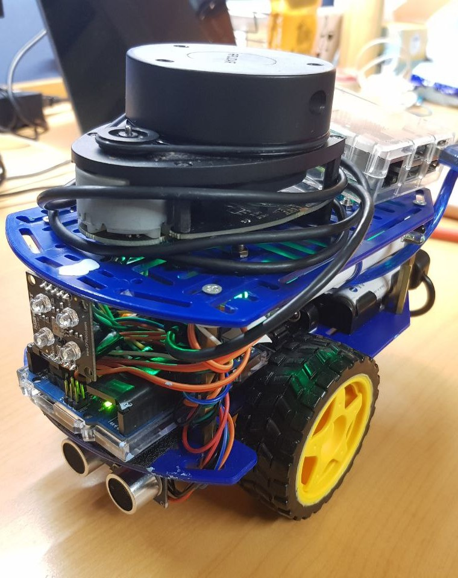

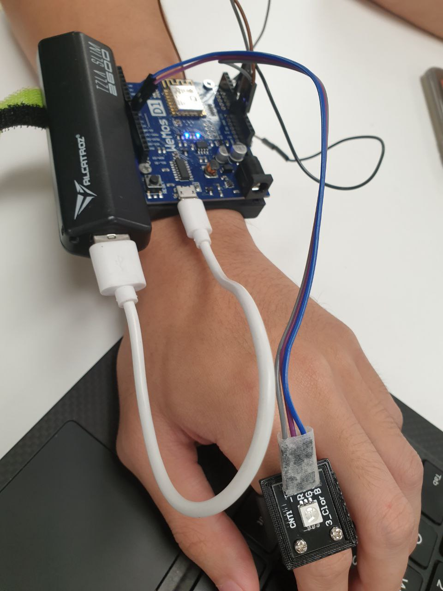
National University of Singapore
I majored in Computer Engineering with a second major in Innovation and Design. Additionally, I have completed the NUS Overseas College Singapore program which I interned at a start-up while analyzing the company and its target market. I did my technical electives in Internet of Things, Human-Robot Interaction, Interaction Design, Electric Vehicles and their Grid Integration, Cloud computing and design and Analysis of Algorithms.
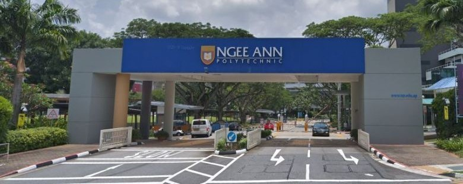
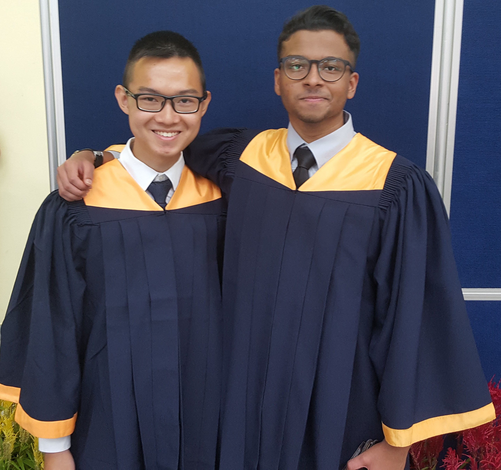
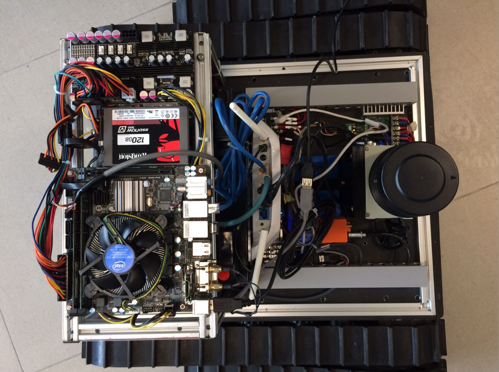
Ngee Ann Polytechnic
I did my Diploma in Engineering Science.
University College London
Currently doing my Master's in Systems Engineering Management.

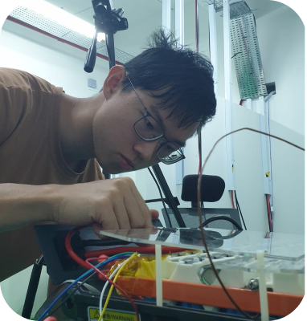
Technical Project Manager/Systems Engineer
For this role, I started with setting up a test-bench for the electric motorcycle`s power electronics system including the battery pack and Battery Management System`s (BMS) components enabling remote testing. Besides that, I designed an interface for the engineers to visually observe the battery`s performance while running tests. Subsequently, I moved towards developing the firmware for the BMS, developed a program to generate .dbc files which is required by the firmware to decipher messages over the Controller Area Network (CAN) Bus. Additionally, I worked on developing a charging process to speed up charging at lower cell degradation.
Skills picked up: High power electronics, SMD soldering, circuit tracing, VBA, and battery testing planning and process.

Power Electronics and Firmware Engineer
For this role, I started with setting up a test-bench for the electric motorcycle`s power electronics system including the battery pack and Battery Management System`s (BMS) components enabling remote testing. Besides that, I designed an interface for the engineers to visually observe the battery`s performance while running tests. Subsequently, I moved towards developing the firmware for the BMS, developed a program to generate .dbc files which is required by the firmware to decipher messages over the Controller Area Network (CAN) Bus. Additionally, I worked on developing a charging process to speed up charging at lower cell degradation.
Skills picked up: High power electronics, SMD soldering, circuit tracing, VBA, and battery testing planning and process.
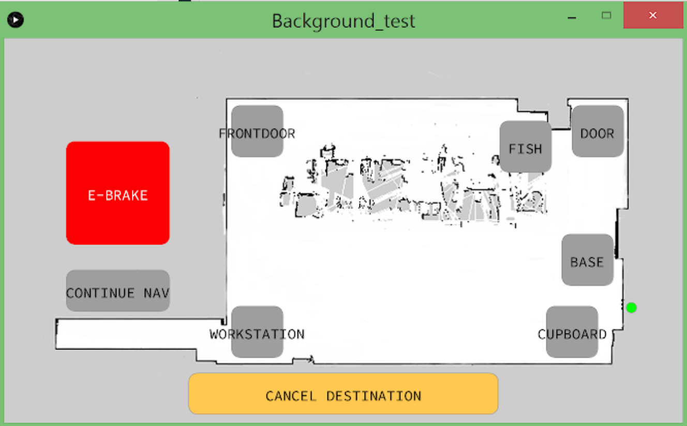
Software Intern
I started at ION Mobility as a Software Intern, and my first task was to develop a system to test state and operations of the electric motorcycle’s Vehicle Control Unit (VCU). To achieve this I utilized a micro-controller and developed code to run both systematic and randomized inputs to test the VCU’s firmware under various conditions to ensure the robustness of the firmware integrated with the circuit board. I worked with CI/CD to enable a fully automated workflow from deployment to testing. Next, I supported my colleague to develop a test-harness for state-flow level testing on MATLAB, Simulink. Subsequently, I worked on developing features on the various controllers on the VCU on the S32K platform, Bluetooth and Wi-Fi chips for LED indicators, mobile connection, and Over the Air programming functionality respectively. Finally, I worked on developing the company’s website at a full-stack level interfacing with AWS then GCP for hosting the website and media reference, and Supabase for user-information.
Project Developer
This was my first development job, which I did immediately after completing my diploma. Initially I was brought in to develop a computer vision program for eye-examinations. However, by the time I joined the company decided to change its trajectory regarding this new project. It was at that point that I suggested to develop a mobile application that could support the company’s marketing efforts. During the process I did some graphic design for the application, which allowed me the opportunity to do some more graphic design for both advertisement, product labels and packaging. Additionally, I researched and developed new product/service concepts to support the expansion of the business.


HIMARS Platoon Commander
As a platoon Commander, I was responsible for the welfare and develop of the soldiers under my charge. I was frequently given the opportunity to conduct battalion level activities for more than 400 personnel. I also developed the standard operating procedure for the unit`s field operation with a newly implemented system. Additionally, I proposed and developed a program to simplify the unit`s safety and hazard reporting process.
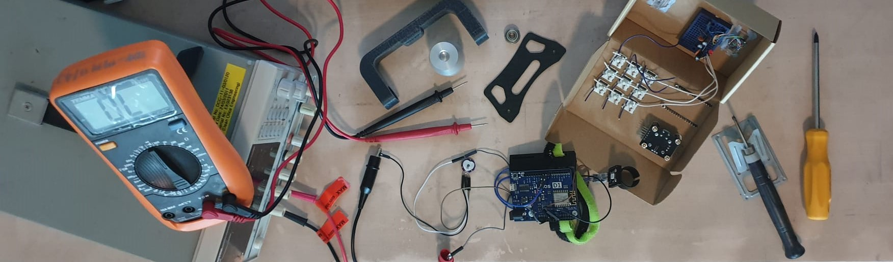
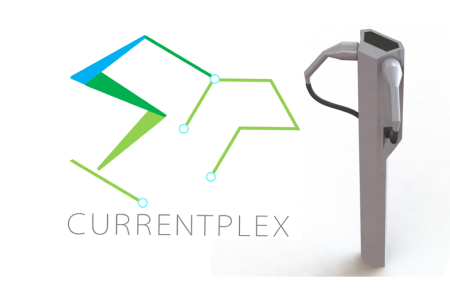
Currentplex
Currentplex is a self-initiated project that aims to overcome the challenges resulting in a poor electric vehicle charging network in countries such as Singapore. It focuses on utilizing adaptable power allocation for mass charging.
Video link.Achievements: James Dyson Awards (National Runner Up), NUS Venture Initiation Program Award.
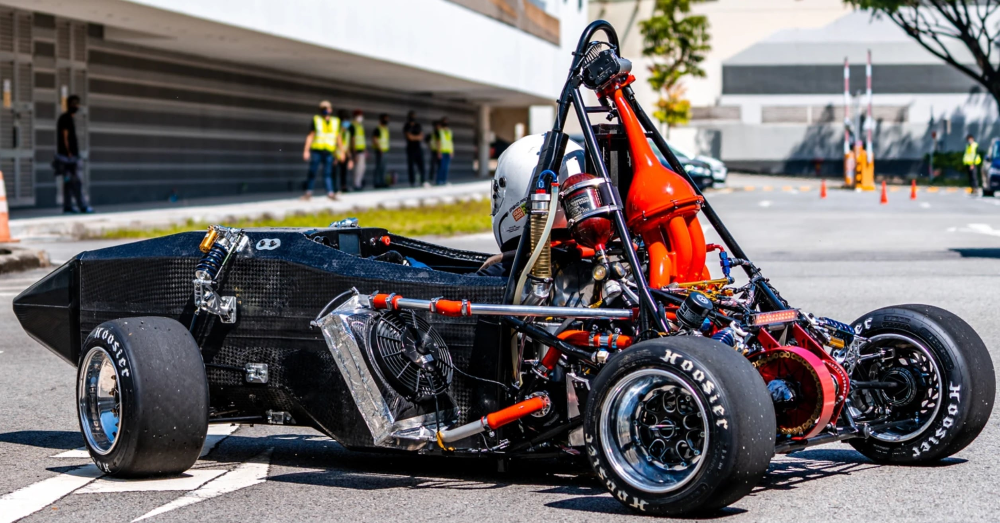

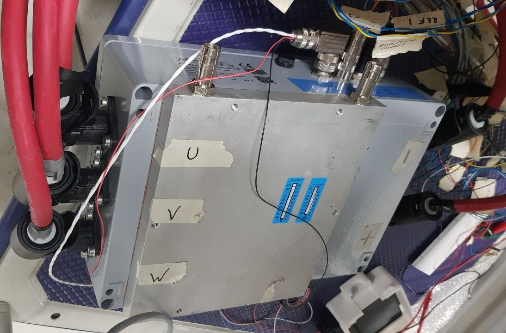
FormulaSAE
NUS FSAE is a school project where we develop a open wheel race car to compete in the international Formula SAE competition hosted by SAE against other university teams around the world. I started with working on the Vehicle Control Unit`s operating system, the driver display`s graphical user interface, and the analysis software for performance mapping and tuning. Subsequently, I aided the electrical department to design and implement the current monitoring system and the vehicle`s inter-device communication protocol.
Instagram link.Software Intern
I started at ION Mobility as a Software Intern, and my first task was to develop a system to test state and operations of the electric motorcycle’s Vehicle Control Unit (VCU). To achieve this I utilized a micro-controller and developed code to run both systematic and randomized inputs to test the VCU’s firmware under various conditions to ensure the robustness of the firmware integrated with the circuit board. I worked with CI/CD to enable a fully automated workflow from deployment to testing. Next, I supported my colleague to develop a test-harness for state-flow level testing on MATLAB, Simulink. Subsequently, I worked on developing features on the various controllers on the VCU on the S32K platform, Bluetooth and Wi-Fi chips for LED indicators, mobile connection, and Over the Air programming functionality respectively. Finally, I worked on developing the company’s website at a full-stack level interfacing with AWS then GCP for hosting the website and media reference, and Supabase for user-information.
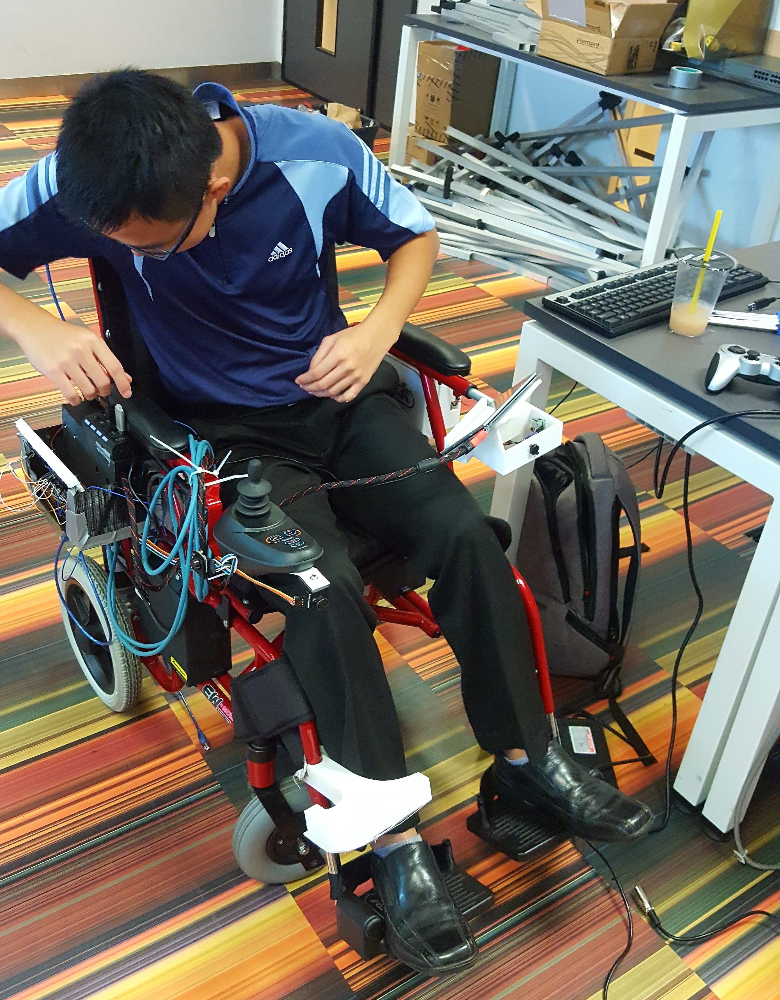
Autonomous Wheelchair
This was the final year project for my diploma where my team developed a autonomous wheelchair for use in a hospital environment to efficiently transport patients without the need for a accompanying nurse. This helps to overcome the challenge of the lack of nurses in hospitals. I primarily designed the attachments for various components such as indicators, LiDAR, Control box, display mount and other proximity sensors. I also developed the server based asset monitoring system to manage the use of the autonomous wheelchairs in a hospital. Additionally, I developed the control logic for the sensors and indicators, and developed the user interface.


Taking Things Apart
My love for engineering started as I took apart a laptop, seeing how every component is put together. Unfortunately I could not reassemble the laptop. Later I started to take apart and fix desktops, laptops, mobile phones, monitors, various home appliances, and even a motorcycle internal combustion engine!
Sports
I have always enjoyed playing basketball with my friends in polytechnic, with my work colleagues and neighbors. I was never really great at it but that was a bonding opportunity as my friends would talk about basketball, teach me drills and help me improve on the sport, and finally have an interest which is common with most people.
Videography/ editing
I recorded and made my first video in the military, and then I realized how exciting it was and took up every opportunity to make videos for my school development projects and compiled videos for non-academic school activities and organizations.
Yi Zheng`s YouTube Channel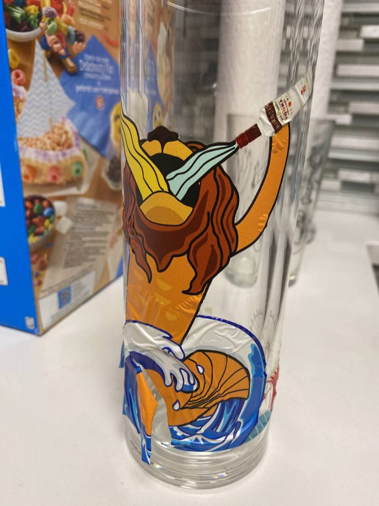
Making Unique Gifts
I loved creativity when giving gifts, as I knew I could never find the perfect gift something people needed or wanted. My solution was to do things differently. It started with giving people fruits and chili with the actual gift inside. Then I found an avenue to creating gifts such as designing personalized graphics and printing them on laptop cases, bottles, and shoes. Usually, it captures an inside joke I had with the receiver, and they loved it which kept me going.